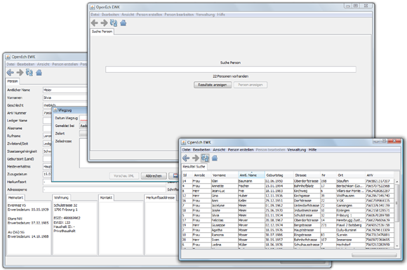

Einwohnerkontrolle mit Open-eCH EWK

Die Version 0.8.x der freien Software für Einwohnerkontrollen bietet unter anderem:
- Meldegründe wie Zuzug, Wegzug, Geburt und Todesfall
- Historisierung aller personenbezogener Geschäftsvorfälle
- Umfangreiche Import- und Export-Möglichkeiten der Personendaten
- Kontextuelle Benutzerunterstützung und Tastatatursteuerung
- Einfache Installation
- Unterstützte Plattformen: Windows, Mac OS X und Linux